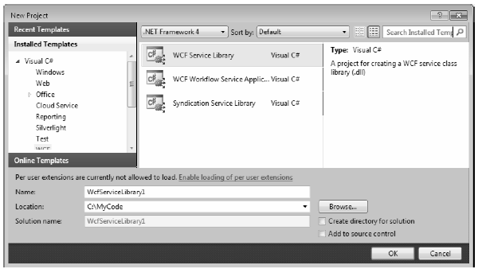
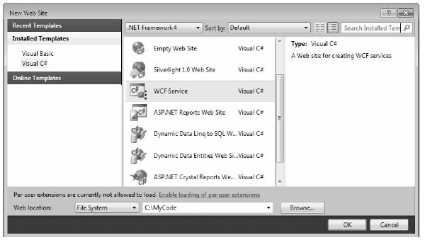

As will be explained in more detail later in this chapter, a WCF application is typically represented by three interrelated assemblies, one of which is a *.dll that contains the types that external callers can communicate with (in other words, the WCF service itself). When you wish to build a WCF service, it is perfectly permissible to select a standard Class Library project template (see Chapter 14) as a starting point and manually reference the WCF assemblies.
Alternatively, you can create a new WCF service by selecting the WCF Service Library project template of Visual Studio 2010 (see Figure 25-2). This project type automatically sets references to the required WCF assemblies; however, it also generates a good deal of starter code, which you will more likely than not delete.
Figure 25-2 The Visual Studio 2010 WCF Service Library project template
One benefit of selecting the WCF Service Library project template is that it also supplies you with an App.config file, which might seem strange because you are building a .NET *.dll, not a .NET *.exe. However, this file is useful because, when you debug or run your WCF Service Library project, the Visual Studio 2010 IDE will automatically launch the WCF Test Client application. This program (WcfTestClient.exe) will look up the settings in the App.config file, so it can host your service for testing purposes. You’ll learn more about the WCF Test Client later in this chapter.
Note The App.config file of the WCF Service Library project is also useful because it shows you the barebones settings used to configure a WCF host application. In fact, you can copy and paste much of this code into your host’s actual configuration file.
In addition to the basic WCF Service Library template, the WCF project category of the New Project dialog box defines two WCF library projects that integrate Windows Workflow Foundation (WF) functionality into a WCF service, as well as a template to build an RSS library (see Figure 25-2). The next chapter will introduce you to the Windows Workflow Foundation, so you’ll ignore these particular WCF project templates for the time being (I’ll leave it to the interested reader to dig into the RSS feed project template).
You can find yet another Visual Studio 2010 WCF-centric project template in the New Web Site dialog box, which you activate using the File < New < Web Site menu option (see -Figure 25-3).
Figure 25-3 The Visual Studio 2010 web-based WCF Service project template
This WCF Service project template is useful when you know from the outset that your WCF service will use web service–based protocols rather than, for example, TCP or named pipes. This option can automatically create a new Internet Information Services (IIS) virtual directory to contain your WCF program files, create a proper Web.config file to expose the service through HTTP, and author the necessary *.svc file (you’ll learn more about *.svc files later in this chapter). Thus, the web-based WCF Service project is a time-saver because the IDE automatically sets up the required IIS infrastructure.
In contrast, if you build a new WCF service using the WCF Service Library option, you have the ability to host the service in a variety of ways (e.g., custom host, Windows service, or manually built IIS virtual directory). This option is more appropriate when you wish to build a custom host for your WCF service that can work with any number of WCF bindings.